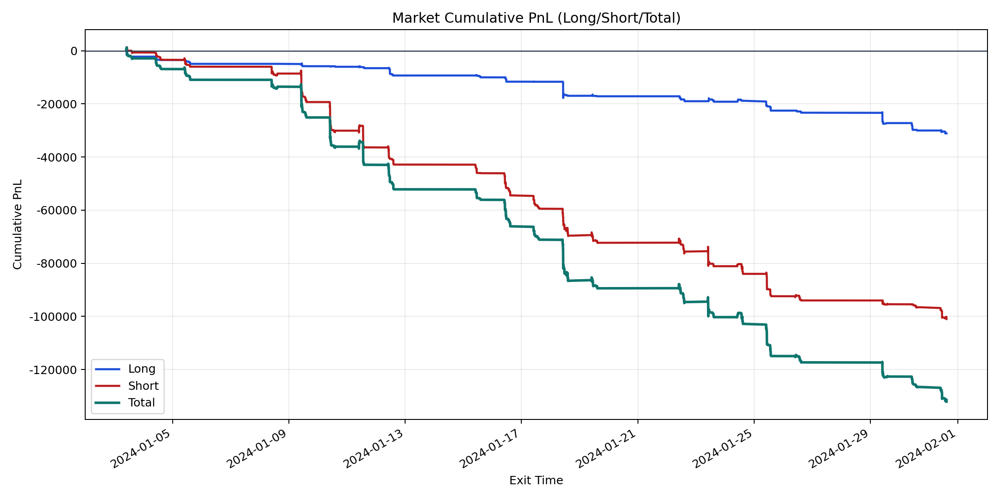
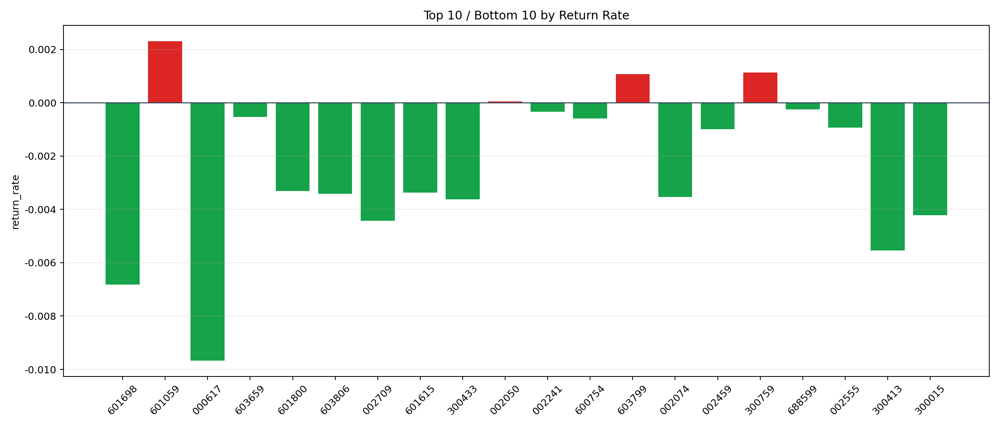

| repo_root | /home/haoranyou/data/output/dynamic_AUM_TAKER |
|---|---|
| period_months | 1 |
| period_label | 2024-01-03_to_2024-01-31 |
| start_time | 2024-01-03 09:54:47 |
| end_time | 2024-01-31 14:41:57 |
| n_trades | 4130 |
| n_symbols | 49 |
| total_pnl | -132098.51235000047 |
| long_total_pnl | -31106.818349999736 |
| short_total_pnl | -100991.69400000075 |
| total_entry_notional | 73311059.0 |
| long_entry_notional | 16471850.0 |
| short_entry_notional | 56839208.99999999 |
| total_return_rate | -0.0018018906581338632 |
| long_return_rate | -0.0018884835856324417 |
| short_return_rate | -0.0017767962604828078 |
| top_symbols_by_return | ["601059", "300759", "603799", "002050", "688599", "002241", "603659", "600754", "002555", "002459"] |
| bottom_symbols_by_return | ["000617", "601698", "300413", "002709", "300015", "300433", "002074", "603806", "601615", "601800"] |

